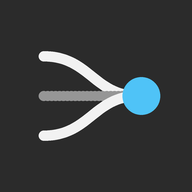

Da oltre 25 anni lavoro nell'informatica sanitaria, tra sistemi di laboratorio, diagnostica clinica e integrazioni HL7. Qui raccolgo le app che costruisco per il lavoro, la famiglia e la comunità.
Trekking sul Monte Baldo con mappa, GPS, avanzamento e profilo altimetrico. Funziona anche senza rete.

Meteo che confronta 11 modelli e 3 ensemble, calibrati sulle previsioni passate, con probabilità e allerte.
Quiz a squadre da proiettare sulla Dottrina sociale della Chiesa, per il Gruppo Giovani: domande a tempo, scenari e podio.